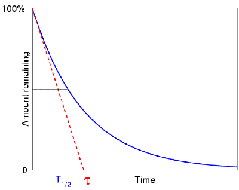
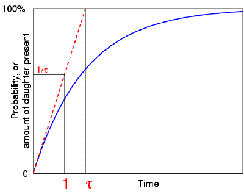

By Don Koks, 2003.
Specifying the half life or mean life of a process is a way of quantifying how fast it is occurring, when the whole process would in principle take forever to complete. The example we will talk about here is radioactive growth and decay, but examples from other fields include the recovery of a muscle after some exertion, and the filling of a cistern.
In particular then, the half life of a radioactive element is the time required for half of it to decay (i.e. change into another element, called the "daughter" element).
So if a radioactive element has a half life of one hour, this means that half of it will decay in one hour. After another hour, half of the remaining material will decay. But why didn't all of that remaining material decay in that second hour? Does the element somehow know that it's decaying, and alter its decay speed to suit?
Textbooks are usually content with deriving of the law of decay, and don't tend to address this question. And yet it forms a classic example of the way in which research in physics (and science in general) is carried out. Regardless of how we might expect an element to behave—where perhaps the second half might be expected to decay in the same amount of time as the first half—this simply does not happen. We must search for a theory that predicts this.
Science is often thought to proceed by our logically deducing the laws that govern the world. But it's not that simple; there are limits to what we can deduce, especially about things in which we cannot directly participate. Radioactive decay is a good example of this. We can't use a microscope to watch the events that make an element decay. The process is quite mysterious. But what we can do is make a simple theory of how decay might work, and then use that theory to make a prediction of what measurements we can expect. That's the way science proceeds: by making theories that lead to predictions. Sometimes these predictions turn out to be wrong. That's fine: it means we must tinker with the theory, perhaps discard it outright, or maybe realise that it's completely okay under certain limited circumstances. The hallmark of a good scientific theory is not what it seems to explain, but rather what it predicts. After all, a theory that says the universe just appeared yesterday, complete with life on Earth, fossils and so on, in a sense "explains" everything beautifully by simply defining it to be so; but it predicts absolutely nothing. So from a scientific point of view it is not a very useful theory, because it contains nothing that allows its truth to be tested. On the other hand, while it's arguable that the theory of quantum mechanics explains anything at all, it certainly does predict a huge number of different phenomena that have been observed; and that's what makes it a very useful theory.
For radioactive decay, our theory is that the atoms decay, or change into another atom, quite spontaneously. At a basic level, we don't know why this should be; but we can only proceed step by step, and so first we begin with this simple theory. We postulate that they decay independently of whether their neighbours are decaying, and also that their tendency to decay is independent of how old they are. A given atom might decay after one microsecond, or one million years. However long it has been sitting intact makes no difference to its ability to decay right now. If the mechanism behind its decay is strong, in the sense that the atom has a large chance of decaying, then it won't last long: after all, the chance that it won't decay in some time interval is small, so the chance that it survives for any appreciable amount of time is then also small. That can be worked out by simple probability: multiplying together the probabilities that it doesn't decay for a string of those time intervals. The statistics of decaying elements, such as the mean and standard deviation of the number of atoms decaying in various time intervals, were measured soon after radioactivity was discovered; they were found to match those predicted by this idea of random decay, called Poisson statistics. Whenever anything has a small chance of happening, but there are lots of opportunities for it to happen, we get Poisson statistics.
So certainly physics has not proven, and can never prove, that its theory of atomic decay is true. The logical process is that if atoms decay randomly, then Poisson statistics will result. Experiments show that Poisson statistics do indeed result, but logically this does not mean that atoms decay randomly. Nevertheless, the way of science is that we do postulate that atoms decay randomly, until a new experiment calls this into question. But no experiment ever has. If this sounds like a reverse use of logic, then consider the same ideas for mechanics. Ideas of gravity, mass and acceleration were originally produced by Newton through the same process: because they predicted planetary orbital periods that could be verified experimentally. Because of this great success, expressions such as F = ma and F = GMm/r2 came to be canonical in physics. The logic was indeed being used in reverse; but no one was surprised when, three centuries later, one of the moon astronauts dropped a feather and a hammer together in the moon's vacuum, and found that they both fell at the same rate (although it was still beautiful and dramatic to watch!). That reverse logic had, after all, allowed him to get to the moon in the first place. So this way of conducting science works very well.
We can perform a simple test of this theory of radioactive decay by doing an experiment with a big group of people; the group should be large so as to get good statistics. Put 1000 people into a big hall, and give each a coin. Each person represents a radioactive atom, and the coin represents their ability to decay. Tell everybody to toss their coin once per minute. If the result is heads, then the person should immediately leave the hall (which corresponds to the atom decaying). If tails, then take no action, except waiting for another minute to elapse, and then tossing again.
What happens? After one minute, roughly half of the people get up and walk out, because their coins landed heads up. After another minute, everyone tosses again, and about half the remainder will walk out. Of course we don't expect everyone to leave after the second minute; as each minute goes by, roughly half of the group walks out. Our simple model of random behaviour has produced a half life! We say that this particular "element" has a half life of one minute. Really of course, the laws of physics don't operate at one minute intervals; we should really ask everyone to toss continuously. This is fine, but it would cause a lot of commotion and make it harder to see what was happening.
Although it's not obvious, it can be shown that in such a situation where the amount of an element halves in a constant time interval, it will also "third" in a different constant time interval that is not hard to calculate. In fact, we can choose any number we like to describe the decay speed. Choosing the halving time is conventional because it's unambiguous. If a radioactive element was said to have a "third life" of one hour, then no one would ever remember if that means that after one hour one third has decayed, or one third is left over. Specifying the half life doesn't produce this problem of course.
Getting back to our group of 1000 people, still flipping their coin every minute, we could change its half life by changing the requirement to leave. For example, every minute each person tosses their coin quickly twice. But now, only those getting two heads must leave. In that case, after the first minute, one quarter will leave, and after the second minute, one quarter of the remainder will leave. The half life now is longer than one minute. So, we've arranged for this "element" to decay more slowly, by lowering the chance that any one of its constituent atoms decays. Remember that any particular person who sits and tosses their coin might sit for any amount of time, irrespective of how many of their neighbours have now left the hall. They might even sit for years continually flipping their coin, only to find it always lands tails up. The chance is small of course that this will happen, but it just might. The chance that any person leaves is completely independent of how long they have been sitting there.
Here is another way of demonstrating radioactive decay, this time closer to the feel of a real experiment. Put a couple of teaspoons of mustard seeds in a mortar, and grind them with a pestle. For a classroom demonstration, have a microphone nearby that amplifies the click as each seed bursts. In the random crashing-together of the seeds, the chance that any particular one will burst is roughly independent of its neighbours and also roughly independent of time. So what we hear is initially a burst of clicks that soon dies down, with a half life of several seconds or longer. This is just like what would be heard if we put a Geiger counter next to a rapidly decaying element.
Given our radioactive element, if half of its atoms have decayed after one half life, then we can expect there to be some kind of well defined average life expectancy: the mean life of the atoms, which is somewhat longer than their half life. It turns out that the mean life equals the half life divided by the natural logarithm of 2 (about 0.693). The mean life also turns out to exactly equal the number τ that appears in the exponential term e−t/τ involved with describing decay or growth, called the time constant. The label "time constant" is just a name for τ; the fact that the mean life happens to equal τ is a kind of neat coincidence that allows us to think of the mean life in the following, alternative, way.
We said above that the speed of any decay process can be described by the time it takes for the remaining amount of the element to fall to a half, or a third, or any fraction at all. One special choice of that number is e, and the length of time after which the amount remaining has been reduced to 1/e of the original also happens to equal the mean life of the decay. This is one reason why the number e is so special. Besides the fact that e has friendly properties that simplify the mathematics of growth and decay, it also quantifies such an everyday idea as the average life expectancy of the atoms.
When we plot the amount of a radioactive element as a function of time, we find that it drops with a characteristic "exponential decay curve" that helps to show this half life idea more mathematically. Here is a question:

suppose that the element did not decay exponentially (i.e. with a half life), but instead decayed linearly, meaning its rate of decay was always equal to its initial rate (giving rise to a simple "first half in one minute and the second half in the next minute—and then, all gone" sort of idea). In such an idealised case, how long would it take to completely vanish? That is, suppose we have 1000 atoms of a radioactive element, and initially there are 10 atoms decaying per second. If it was to keep decaying at this rate (it won't, but imagine that it did), then how long would it take to completely vanish? The answer is of course 100 seconds. Now it turns out that this is precisely equal to the mean life of the real element. (Which means that we know straight away that the real element's half life is 69.3 seconds.)This way of looking at the concept of mean life also appeals to our intuition: it says that if the atoms behaved in the nice, linear way that we humans love to think in, then the time needed for them all to decay would be exactly equal to the mean life of the actual, real world, element. You can see that the number e is tied in to simple ideas of linearity, and that's another reason why it is such a powerful number in mathematical analysis.
This same idea applies to the growth of the daughter element. Suppose for simplicity that the daughter is not itself radioactive. Initially there are no daughter atoms, and gradually they grow as the parent element decays. Their growth must eventually flatten out, and this takes infinite time, for the same reason that it takes infinite time for the parent element to fully decay. We ask the question: if the growth of the daughter continued at its initial rate, (which it doesn't, remember!), then how long would it take for the sample to be completely composed of daughter atoms? Again, this time interval turns out to be the mean life of the parent.
That last way of applying the mean life to growth produces a way of speaking that is not always well understood by those who use it. Suppose we have a single atom of a radioactive element, sitting in front of us, waiting to decay. We ask: what is the probability that after some time t, it has decayed? On the average, we can expect that after one mean life τ has elapsed, there's a reasonable chance that the atom will have decayed. Although it might take a million times that period before it actually does decay, we feel confident that after perhaps two or three mean lives have passed, the atom will almost certainly have decayed.
We cannot really plot this probability as a function of time, because that would require knowing when the atom will decay (since then the probability equals one). So, the best we can do is to make a generic plot that correctly describes the whole population of decaying atoms, since the atom in front of us behaves just like the other atoms of the element. In that case, we expect that the probability will grow, tending towards one as t goes to infinity. Remember: this is an average sort of prediction; any individual atom will certainly attain one at some point. But it's the best we can do.
The actual expression for this probability turns out to be 1 − e−t/τ, which indeed tends toward one as t tends to infinity. (It's actually the same curve as that describing the growth of the daughter element.)

Now, what is the value of this (generic) probability when t=1: what is the chance that the atom has decayed after one unit of time? Well, the answer is 1 − e−1/τ. . . which might not communicate very much! So as we did before, let's ask another, related, question. If the probability of decaying within time t continued to increase at its initial rate, (which it doesn't really!), then how long would it take for the atom to decay—after how long would this probability reach one? Again, this time interval turns out to be the mean life τ. But if our linear, simplified, atom reaches decay probability one after a time τ, then it must reach probability 1/τ after a unit time.In our example above with 1000 atoms and initially 10 decays per second, we concluded the mean life was τ = 100 seconds. So, if the chance that any particular atom had decayed was to keep increasing uniformly at its initial rate, then after one second, the chance that it had decayed would be 1/100. This makes sense: 1/100 of the initial 1000 atoms is the 10 atoms we measured to have decayed. So we say "the atom has a probability of decay of 1/100 per second". Remember, this doesn't mean that after 100 seconds it will definitely have decayed! This would only be true if the atom were to behave in a simple, linear, way.
The fact that the atom's probability of having decayed is "slowing down", is just like a pushed trolley that starts out with a speed of 1/100 metre per second, but decelerating due to friction at just the right rate so as to match our atom. If there were no friction so that it moved at constant speed, then it would take 100 seconds to travel a metre. It doesn't do this of course—it never quite reaches a metre distance because it continuously slows down; but 1/100 m/s refers to its initial rate of distance increase. And likewise for our generic atom that represents the whole population of atoms, "1/100 per second" refers to its initial rate of "decay-probability increase". In an average sense for the whole population, that decay probability will never quite reach one, although it will eventually reach one for any particular atom.
This whole discussion of growth can also be applied to the daughter element, because that grows with precisely the same time constant τ. If it continued to grow at its initial rate, then after a time τ the sample would be completely composed of daughter atoms.
You can see that we can juggle these numbers and get a feel for the details of an element's decay or growth. But for these more refined ideas, it's certainly a whole lot easier to think in terms of the mean life, than the half life. Even so, both the mean life and the half life give us an intuitive feel for radioactive decay, and each has its own domain of usefulness.